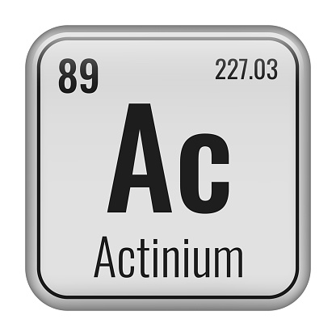

Actinio
El cloro es ampliamente utilizado para desinfectar agua potable y piscinas, eliminando bacterias, virus y algas, garantizando agua segura para consumo y recreación .
En el hogar y hospitales, se emplea para limpiar superficies y equipos médicos, previniendo la propagación de infecciones y manteniendo ambientes higiénicos . También se usa en la industria alimentaria para desinfectar utensilios, envases y superficies de procesamiento.
Para que sirve
-
Usos industriales y químicos
En la industria, el cloro es un componente clave en la fabricación de productos químicos, como plásticos (PVC), fibras de vidrio, medicamentos y productos de limpieza
. Además, se utiliza en blanqueamiento de papel y textiles, eliminando manchas y mejorando la apariencia de los materiales
. También participa en la purificación de petróleo y gas natural y en el tratamiento de aguas residuales
-
Funciones en el organismo humano
El cloro es un mineral esencial que regula el equilibrio hídrico, la presión arterial y la función renal
. Forma parte del ácido clorhídrico en el estómago, facilitando la digestión de los alimentos, y contribuye a la correcta transmisión de impulsos nerviosos y al mantenimiento del balance ácido-base del cuerpo
Tabla Periodica.
